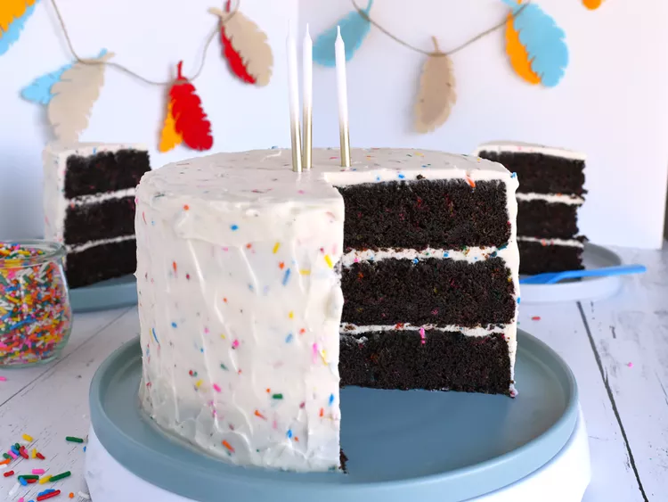

Chocolate Funfetti Cake

Description
Sprinkles make everything more fun—and this chocolate funfetti cake proves it! To make the cake layers easier to frost, I recommend carefully wrapping them in plastic wrap, then placing them either in the fridge or freezer until chilled.
Ingredients
- 2 cups cake flour
- 1 cup unsweetened cocoa powder
- 1 tablespoon instant espresso powder (optional)
- 1 teaspoon baking soda
- 1 teaspoon baking powder
Steps
- Preheat the oven to 350 degrees F (175 degrees C). Spray 3 8-inch round cake pans with a baking spray containing flour, and line the bottoms of the pans with parchment paper.
- For cake, sift together flour, cocoa powder, espresso powder, baking soda, baking powder, and salt. Set aside.
- In a large bowl, beat together butter, vegetable oil, and brown sugar on medium-high speed until light and fluffy, 3 to 4 minutes. Add in eggs 1 at a time; beating well after each addition. Mix in vanilla. Add in half of the dry ingredients and mix until just combined. Add in sour cream and milk, and mix until just combined. Add in remaining dry ingredients and mix until just combined. Fold in sprinkles.
- Divide batter evenly between pans. Gently tap pans on the counter a few times to remove larger air bubbles.
- Bake in the preheated oven until tops of the cakes spring back lightly when touched, 30 to 35 minutes. Err on the side of slightly underbaking rather than overbaking. Allow cakes to cool in pans for 30 minutes before removing to a wire rack to cool completely.
- For frosting, beat butter in a large bowl until smooth. Add in cream cheese and beat until smooth. Add in 1 cup of powdered sugar, 1 1/2 teaspoons vanilla, 1/4 teaspoon salt, and almond extract and mix until smooth. Add in remaining powdered sugar 1 cup at a time, mixing well after each addition. Add in chilled heavy cream and beat until frosting is light and fluffy, about 3 minutes on medium-high speed. Fold in sprinkles.
- To assemble cake, place one cooled cake layer onto a serving platter. Top with a thin layer of the frosting. Continue layering and frosting remaining cake layers. Use remaining frosting to frost the top and outside of cake. Place cake into the fridge to chill for 30 minutes before serving.